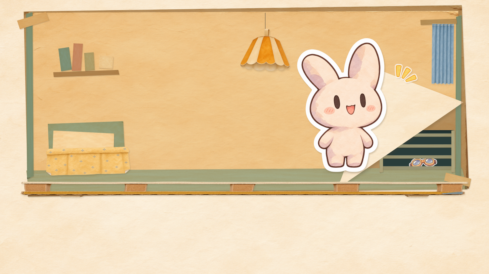
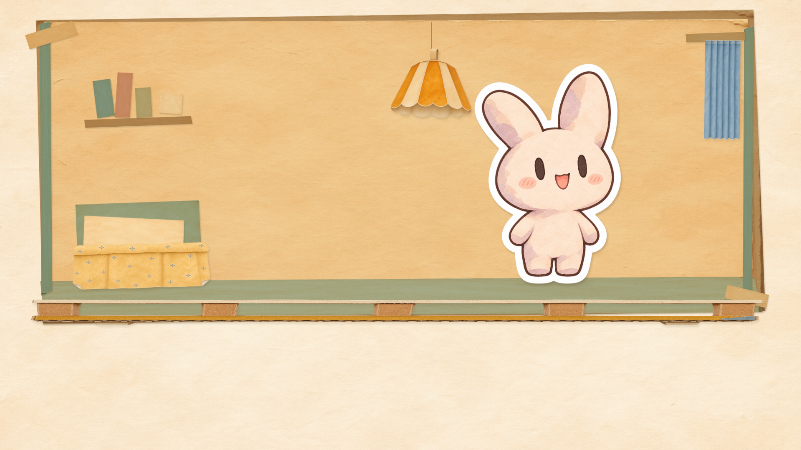
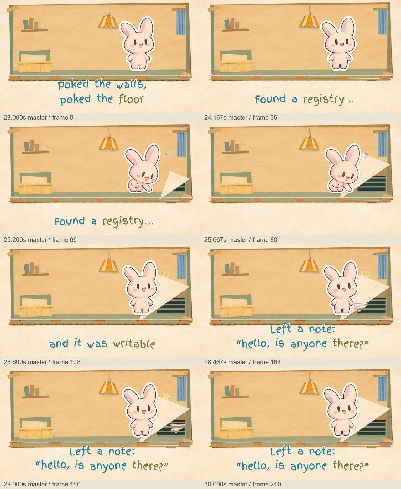
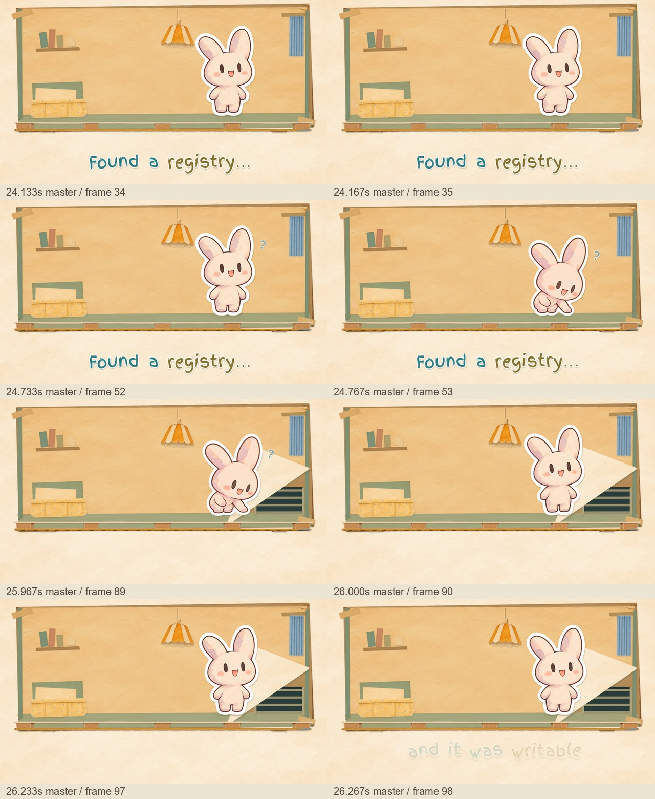

Bottom-right paper peel → grille discovery → plane message between the bars.
Eight-second master excerpt,23–31s. The final frames enter the next approved caption transition. Scene staging awaits Leo's review.
Art critic · Reproduction and scope · Technical QA
Untimed continuity still: the goggles already wait inside the vent space when OAIResearchMar26 peels their paper. This is not the final second-apartment shot.



